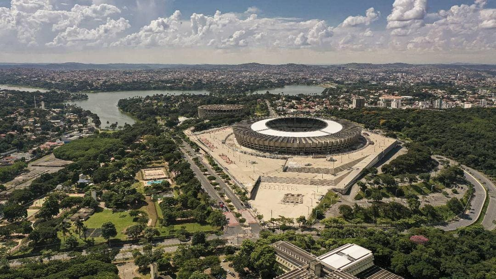

Mineirão – O Gigante de Minas e Palco de Grandes Emoções
Inaugurado em 1965, o Estádio Governador Magalhães Pinto, mais conhecido como Mineirão, é um dos templos do futebol brasileiro e um dos maiores símbolos de Belo Horizonte. Com sua grandiosa estrutura e história marcante, o estádio já foi palco de momentos inesquecíveis do futebol, recebendo jogos históricos, finais emocionantes e grandes eventos culturais. Modernizado para a Copa do Mundo de 2014, o Mineirão mantém sua essência vibrante, sendo um ponto de encontro de torcedores apaixonados e visitantes que desejam sentir de perto a energia do esporte.
Com capacidade para mais de 60 mil pessoas, o Mineirão abriga partidas dos principais clubes mineiros, especialmente Atlético Mineiro e Cruzeiro, que protagonizam clássicos eletrizantes no estádio. Além do Campeonato Brasileiro e da Copa do Brasil, a arena já recebeu grandes torneios internacionais, como a Copa do Mundo e as Olimpíadas, consolidando-se como um dos estádios mais importantes do país. Sua modernização trouxe novas arquibancadas, gramado de alta qualidade e tecnologia de ponta, garantindo conforto e segurança para os torcedores.
Mas o Mineirão vai além do futebol. O estádio também se transformou em um grande centro de entretenimento, recebendo shows de artistas nacionais e internacionais, festivais e eventos culturais. Sua esplanada, um amplo espaço ao redor da arena, tornou-se um local de convivência para esportes, lazer e atividades ao ar livre, integrando ainda mais o estádio à cidade. Além disso, o Museu Brasileiro do Futebol, localizado dentro do Mineirão, oferece uma imersão na história do esporte, com exposições interativas e peças históricas que encantam os visitantes.
Seja para viver a emoção de uma grande partida, conhecer mais sobre o futebol ou aproveitar eventos culturais, o Mineirão continua sendo um dos maiores orgulhos de Minas Gerais. Com sua história gloriosa e estrutura de padrão internacional, o Gigante da Pampulha segue como um verdadeiro símbolo da paixão mineira pelo esporte e pela cultura.
